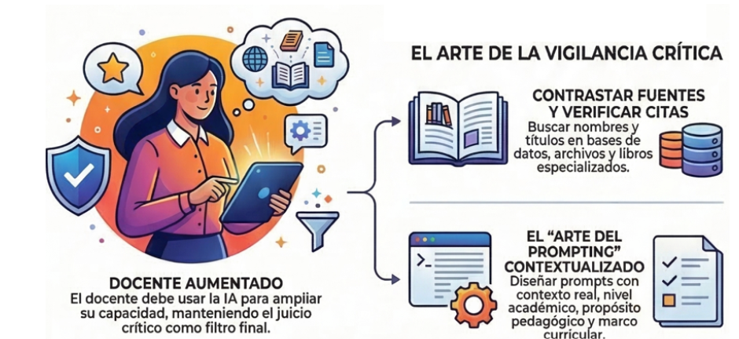

¿Por qué verificar?
Las IA pueden ser demasiado útiles, pero no son perfectas, estas utilizan patrones y se entrenan con algoritmos que reco pilan información de diversas fuentes, como datos públicos y privados y grandes cantidades de texto de internet, pero en re alidad no "conocen" los hechos ni la verdad
Método SIFT
Las siglas SIFT resumen los pasos del proceso de verificación: Stop (atura’t), investigate the source (inve
stiga la fuente), find better coverage (busca una cobertura millor) i trace the evidence (rastrea las pruebas).
SIFT para IA se puede resumir en cuatro pasos:
1. Introducir la información en la IA. Plantea la afirmación
que quieres verificar y pide su contexto.
2. Investigar con preguntas de seguimiento. Profundiza con preguntas con
cretas para entender mejor lo que se afirma y qué evidencias hay.
3. Pedir fuentes de calidad. No te quedes con la
respuesta: pide fuentes fiables y relevantes.
4. Salir de la IA y comprobar. Para el experto, el paso clave: revis
a las fuentes directamente y comprueba que dicen lo que se afirma desde la IA.
Evaluación de información
Para poder confiar en la información brindada por la inteligencia artificial es necesario de donde proviene esta y si cu mple con las características adecuadas para considerarse una fuente confiable.
Características
Conocer la fecha de publicación nos indicará si la información ha sido actualizada o revisada. Dependiendo del tema, se
requerirán fuentes con información actual o publicaciones anteriores.
Sugerencias:
• Delimita el periodo de las fuen
tes de información según la necesidad.
• Verifica cuándo se generó la información. Las IAs pueden tener datos actualiza
dos solo hasta cierto punto.
• Asegúrate de que la información sea lo suficientemente reciente para tu propósito.
•
Cuestiona si la información sigue siendo relevante y si existe información reciente que pueda afectar su precisión.
La i
nformación recuperada resuelve las necesidades sobre el tema y con el nivel de información apropiado para el nivel académic
o o profesional requerido.
Sugerencias:
• Proporciona la mayor cantidad de detalles posibles para que el resultado se
ajuste específicamente a la necesidad de información. Por ejemplo, puedes utilizar términos controlados o un lenguaje técni
co según el tema de investigación.
• Evalúa si la información es pertinente para tu pregunta o tema. Te recomendamos hac
er una investigación exploratoria de fuentes antes de preguntarle a la IA sobre tu tema de investigación, ya que las IAs pue
den generar respuestas que, aunque correctas, no siempre son totalmente relevantes.
La información recuperada por la IA
debería ser contrastada y verificada; aunque las IAs no citan fuentes directamente, pueden estar basadas en un amplio rango
de datos de calidad variable.
Sugerencias:
• Corrobora que la información brindada especifique algún dato sobre el
autor o la fuente de procedencia.
Se debe tener claro el origen de la información; esta debe ser revisada o verificada.
No debe haber inconsistencias en la información recuperada.
Sugerencias:
• Realiza referencias cruzadas de la info
rmación con fuentes confiables, como artículos académicos, informes, libros y páginas web reconocidas.
Pasos para verificar fuentes
Paso 1: Verificar con fuentes confiables
Siempre verifique la información generada por IA utilizando fuentes académicas y profesionales confiables.
Consulte si
tios web de buena reputación, como los sitios oficiales del gobierno (.gov), de las universidades (.edu) y de los principal
es sitios de noticias (.org/.com).
Utilice bases de datos académicas como JSTOR, PubMed y Google Scholar (disponibles a
través de la biblioteca de la Universidad Ambiental de Unity).
Paso 2: Consultar múltiples fuentes
No te fíes de una sola fuente. Contrasta la información obtenida mediante IA con al menos dos o tres fuentes fiables pa
ra confirmar su exactitud.
Si varias fuentes contradicen el texto proporcionado por la IA, confíe en las fuentes reales
y verificadas y cítelas.
Paso 3: Evaluar la relevancia y la credibilidad.
Evalúe la credibilidad de sus fuentes considerando lo siguiente:
• ¿El autor es un experto en la materia?
• ¿La
publicación ha sido revisada por pares o proviene de una institución de prestigio?
• ¿La fuente tiene un sesgo evidente?
• ¿La información es actual y sigue siendo relevante?
Como evitar el plagio
Paso 1: Entender qué constituye plagio
El plagio consiste en utilizar las palabras o ideas de otra persona sin darle el crédito correspondiente. Esto incluye copiar texto textualmente, parafrasear demasiado fielmente o utilizar ideas sin citar la fuente. Utilizar la IA para copiar, parafrasea r o reproducir directamente el trabajo de otra persona y presentarlo como propio constituye una violación del Código de Honor de l programa Unity DE.
Paso 2: Siempre cite sus fuentes.
Cuando utilice contenido generado por IA, debe verificar y citar las ideas que contiene, al igual que lo haría con cualquier o
tra fuente. La IA generativa no es una fuente fiable ni citable por sí sola, por lo que si la IA le proporciona ideas, debe:
•
Verifícalos utilizando fuentes reales.
• Cita la fuente original, no la IA.
La mayoría de las tareas requieren el uso de
citas en el texto para reconocer el origen de las ideas. Es su responsabilidad incluir estas citas y verificar su fuente y pertin
encia.
Paso 3: Cuidado con las citas falsas o inexactas de la IA
Las herramientas de IA generativa pueden generar fuentes ficticias . Si se le pide a una herramienta de IA que añada citas o pr
oporcione referencias sobre un tema, podría ofrecer citas que parezcan reales pero que sean completamente falsas, o citas reales qu
e no digan lo que la IA afirma. Esto se conoce como falsificación de citas o atribución errónea, y constituye una forma de falsif
icación académica.
Evite esta práctica. En su lugar, siga este método:
• Investiga por tu cuenta. Busca tus fuentes en base
s de datos como JSTOR, PubMed, Google Scholar u otros recursos de la biblioteca de Unity.
• Toma nota de las fuentes. Crea un
documento sencillo donde anotes qué ideas provienen de qué fuentes.
• Verifica tú mismo las citas. Si la IA sugiere una fuente
, consulta el artículo o libro original antes de usarlo o citarlo.
Consejo: Si no encuentra la cita mediante una búsqueda rápida
en una base de datos de la biblioteca o en Google Académico, probablemente no exista.
Recuerda: Utilizar una cita falsa o incorrecta
(incluso por accidente) sigue siendo tu responsabilidad y puede considerarse deshonestidad académica.
Paso 4: Utilizar herramientas de detección de plagio
La IA generativa puede incluir contenido copiado de otras fuentes. Para evitar el plagio involuntario:
• Revisa tu bo
rrador con un detector de plagio como Grammarly o Copyscape.(Nota: Estas herramientas son útiles, pero no infalibles).
•
Revisa cuidadosamente tu propio trabajo. Si incluyes un dato, una idea o una cita sin referencia, busca la fuente o elimínala.
Paso 5: Mantenga un registro de sus interacciones con la IA.
Es recomendable guardar las transcripciones de tus conversaciones con la IA. Esta información te ayudará a hacer un seguimiento
de tu uso de la IA y a identificar estrategias exitosas y no exitosas según los comentarios de tu instructor.
Consejos:
• ¡Sea
escéptico y curioso!
• ¡No te límites a copiar y pegar!
• Cuestiona siempre la información e indaga más a fondo.
• Lea
y revise para asegurar la claridad y el significado.
• Si algo parece o suena raro en la salida de una IA, probablemente lo esté.
• Eres responsable de lo que envías, independientemente de la herramienta que utilices.
• Siempre verifica. Siempre cita.
Siempre comprueba.

Referencias
Chaves, E. (s. f.).Edwin Chaves. https://blog.ciaem-redumate.org/las-alucinaciones-de-la-ia-recomendaciones-p
racticas-para-verificar-la-informacion-generada-por-ia/
Unity Environmental. (2026, 1 abril). Fact-Checking Generative AI and Avoiding Plagiarism — Unity Environmental University. Un
ity Environmental University. https://unity-edu.translate.goog/distance-edu
cation/commhub/using-generative-ai/fact-checking-generative-ai-and-avoiding-plagiarism/?_x_tr_sl=en&_x_tr_tl=es&_x_tr_hl=es&_x_tr_pto=
tc
Herrero, M. P. (2026, 2 abril). ¿Sabes cómo verificar la información que te da la IA? ¡El método SIFT te ayuda! - Verificat. Ve
rificat. https://www.verificat.cat/es/verificar-in
formacion-ia-metodo-sift/
IA y verificación de información: ¿aliada o amenaza? | Observatorio de Medios Digitales | Tecnológico de Monterrey. (s. f.).
https://omd.tec.mx/noticia/ia-y-verificacion-de-
informacion-aliada-o-amenaza
Guías temáticas: Inteligencia Artificial en la Investigación Académica: Evaluación de fuentes de información.(s. f.-b). https://libguides.ulima.edu.pe/ia_investigacion/evaluacion